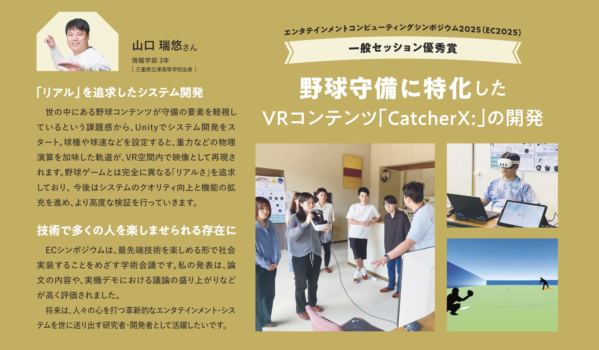

概要
福知山公立大学が発行する「2027年度 入学案内パンフレット」の特集ページ「全国から集まる学生たちの活躍」において，私の活動がメイン記事として大きく掲載されました．
本記事はパンフレット内でも最大規模の扱いとなっており，VRコンテンツ「CatcherX」の開発や，学会での受賞，そして本学での学びがいかに研究に結びついているかについて詳しく紹介していただいています．

大学の顔となる入学案内において，このように取り上げていただいたことを大変光栄に思います．この記事を通じて，本学の魅力やエンタテインメントコンピューティング研究の面白さが高校生や受験生の皆さんに伝わることを願っています．
※ ここに，撮影時の裏話や記事に込めた思いなど，後日執筆予定のコメントが入ります（現在，鋭意思索中）．